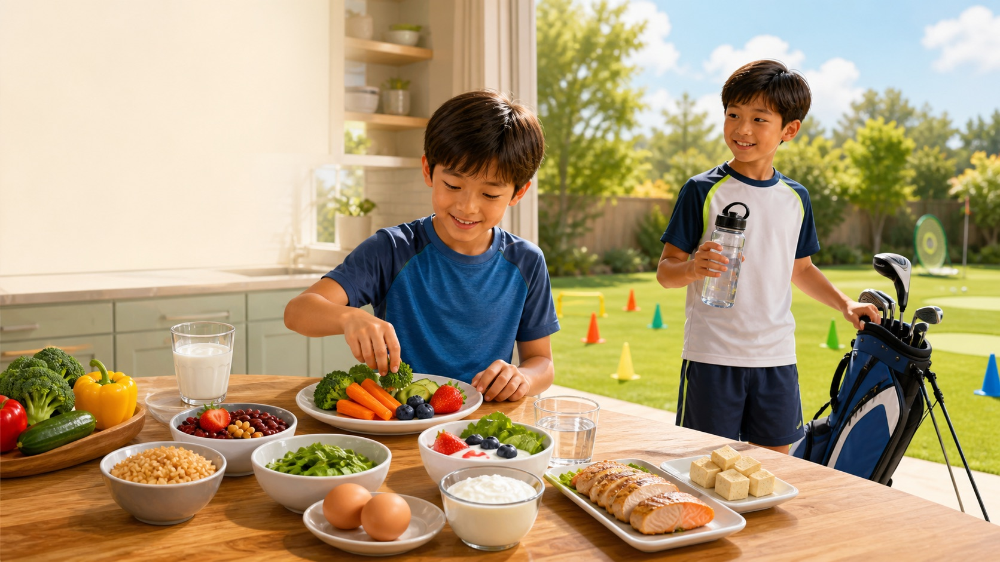

蛋白质 Protein
约3个孩子掌心/天
鱼、鸡蛋、鸡肉、牛肉、豆腐、豆子、酸奶、奶。运动日每餐都要有一点。
About 3 child-palm portions per day. Add some at each meal.

今天先完成这些 | Start here
把“克”和“卡路里”变成自己的手、杯子和盘子。孩子负责看形状，家长负责准备好选择。
约3个孩子掌心/天
鱼、鸡蛋、鸡肉、牛肉、豆腐、豆子、酸奶、奶。运动日每餐都要有一点。
About 3 child-palm portions per day. Add some at each meal.
午餐+晚餐各半盘
每天至少3种颜色，深绿、红橙、豆类轮流来。先吃几口蔬菜再吃主食。
Half the plate at lunch and dinner. Aim for 3 colors.
4-6个小拳头/天
米饭、面、燕麦、土豆、玉米、全麦面包。体能训练日可多一些，油炸少一些。
4-6 small fists daily. More on hard training days.
8岁约5杯，9岁约6杯起
上学前、午餐、训练前、训练中、晚餐都喝。出汗多就加小口多次。
Start with 5-6 cups. Add sips for sweat and heat.
小朋友自己的量尺 | Built-in measuring tools
孩子的手会跟着身体长大，所以比大人的手更适合估自己的份量。每天不追求完美，先追求“每类都到场”。
一份鱼、鸡肉、瘦肉、豆腐大约是自己的掌心大小。鸡蛋、豆子和酸奶也算。
Palm = protein. Fish, chicken, tofu, beans, eggs, yogurt.
一小拳米饭、面、燕麦、土豆，或一拳水果。训练日主食不要省。
Fist = grains, starch, or fruit. Training needs carbs.
每餐先放两个拳头的蔬菜和水果，午晚餐尽量让蔬菜占半个盘子。
Two fists = fruit and vegetables to start a meal.
花生酱、坚果、牛油果、橄榄油别太多；它们有用，但很浓缩。
Thumb = healthy fats. Useful, but small portions.
每一餐 | Every meal
给家长看的换算 | Parent numbers
以下按健康、活跃儿童的常见范围整理。孩子当天特别饿、训练时间长、天气热或正在长个子，通常需要更多真实食物和水。
| 类别 Category | 8岁男孩 Boy 8 | 9岁男孩 Boy 9 | 孩子看得懂的说法 Kid version |
|---|---|---|---|
| 蔬菜 Vegetables | 约2杯/天 | 约2-2.5杯/天 | 午餐和晚餐都让蔬菜占半盘。 |
| 水果 Fruit | 约1.5杯/天 | 约1.5-2杯/天 | 每天2份水果，优先整个水果。 |
| 主食 Grains/starch | 约5-6盎司等量/天 | 约5-6盎司等量/天 | 4-6个小拳头，至少一半选全谷物。 |
| 蛋白质 Protein foods | 约5盎司等量/天 | 约5-5.5盎司等量/天 | 约3个掌心分到三餐和点心。 |
| 奶/钙 Dairy/calcium | 2.5-3杯奶类；钙1000mg | 3杯奶类；钙1300mg | 每天3次奶、酸奶、奶酪或强化豆奶。 |
| 水 Fluids | 约5杯饮品起 | 约6杯饮品起 | 尿色淡黄、训练中小口多喝。 |
体能训练 + 高尔夫 | Fitness + golf
体能训练消耗快，高尔夫时间长、太阳晒、需要专注。两种运动都需要水、主食和蛋白质，但时间点不一样。
米饭/面/土豆 + 掌心蛋白质 + 半盘蔬果 + 水。不要只吃零食上场。
Carb + palm protein + plants + water. Do not start on snacks only.
香蕉、酸奶、全麦吐司、饭团、苹果酱。少油少炸，肚子更舒服。
Banana, yogurt, toast, rice ball, applesauce. Keep it easy to digest.
大多数训练喝水就够。超过60分钟、很热或出汗多，可加电解质/含碳水饮品，但不要能量饮料。
Water is usually enough. Long, hot, sweaty sessions may need electrolytes/carbs. No energy drinks.
主食 + 蛋白质 + 水。例: 牛奶和三明治、酸奶水果、鸡蛋饭、豆腐面。
Carb + protein + fluid: milk and sandwich, yogurt with fruit, egg rice, tofu noodles.
跳、跑、力量练习会用掉肌肉里的能量。训练日别把主食吃得太少，训练后要补蛋白质和水。
Running, jumping, and strength work use muscle fuel. Keep carbs in and recover with protein and fluid.
高尔夫不是一直跑，但时间长、晒、需要稳定专注。带水瓶、香蕉、小三明治、酸奶、坚果或奶酪棒，每60-90分钟小吃一次。
Golf needs steady focus. Pack water plus easy snacks every 60-90 minutes.
自己拿食物 | Self-serve choices
不是永远不能吃甜食，而是每天先把身体需要的吃够。加油食物到场后，偶尔小份喜欢的零食更容易控制。
选: 鸡蛋/酸奶 + 燕麦/全麦面包 + 水果 + 水或奶
少选: 只吃甜麦片、甜面包或果汁
Pick protein + whole grain + fruit + water/milk.
选: 香蕉花生酱、酸奶水果、鸡蛋、奶酪全麦饼干、豆浆
少选: 薯片、糖、奶茶、汽水
Pick snack fuel, not candy fuel.
每天: 水、白奶、无糖酸奶或强化豆奶。
避免: 能量饮料。运动饮料只留给长时间、高强度、大量出汗的训练。
Water first. Avoid energy drinks. Use sports drinks only when practice is long, hard, hot, and sweaty.
今日打卡 | Today tracker
每晚一起看一眼。不是考试，是发现明天少了什么。
依据 | Evidence
整理时间: 2026年7月。优先使用美国2025-2030膳食指南、NIH/DRI、CDC、AAP和儿童医院资料。